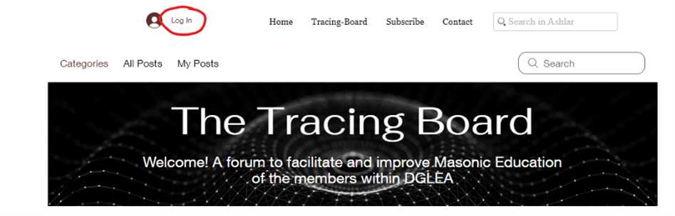
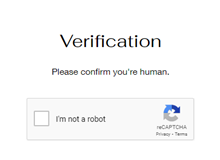
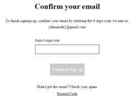

How to Sign Up for the Tracing-Board Forum
Step 1: Navigate to the Website
Click on the Tracing-Board link to go to the forum homepage.
Visit Tracing Board ForumStep 2: Enter the Forum
On the homepage, click the "Enter Forum" button to proceed.
Step 3: Guest Area Password
Type in the password "TGAOTU!" to gain access to the guest area.
Note: You will need to enter this password every time you visit the forum. (This is not the same as your personal account Login and Password that you will create in Step 5)
Step 4: Log In or Sign Up
If you don't have an account, click on the "Log In" option and select "Sign Up."
Step 5: Fill Out the Sign-Up Form
Complete all fields in the sign-up form to create your account. Check the boxes to agree to the community rules and code of conduct before clicking "Submit."

Step 6: Complete CAPTCHA Verification
Complete the CAPTCHA verification to confirm you're human.
Step 7: Confirm Your Email
Check your inbox for a confirmation email and enter the 6-digit code provided to verify your account.
Step 8: Log In to Your Account
Return to the login page, enter your details, and click "Log In" to access the forum.
Step 9: Welcome to the Forum
You should now see your name in the top left corner of the forum page, confirming your successful login.